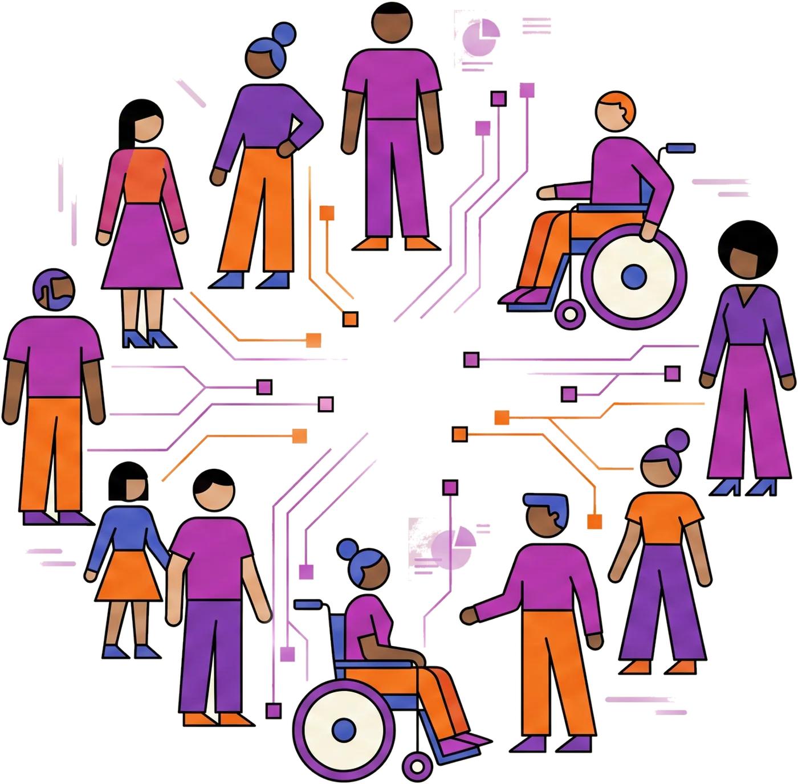
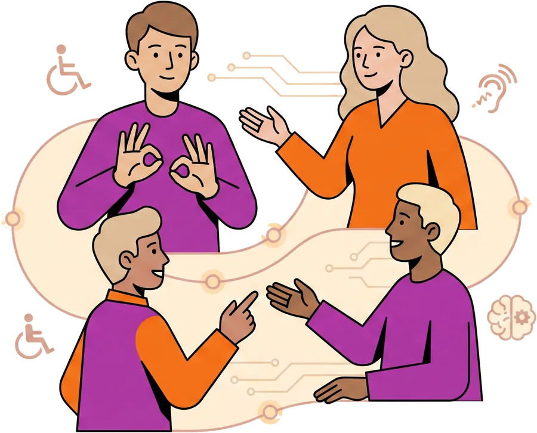
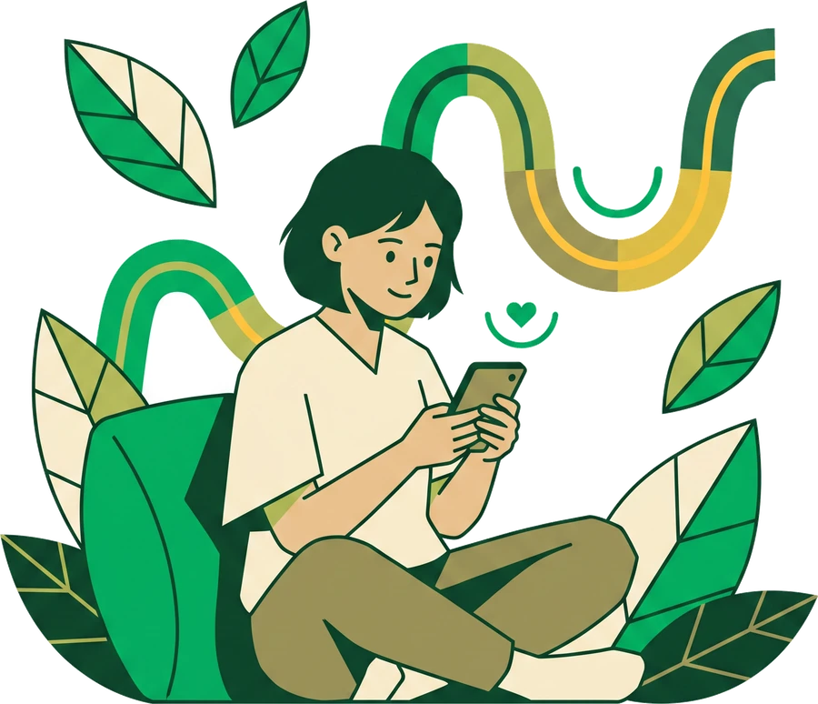
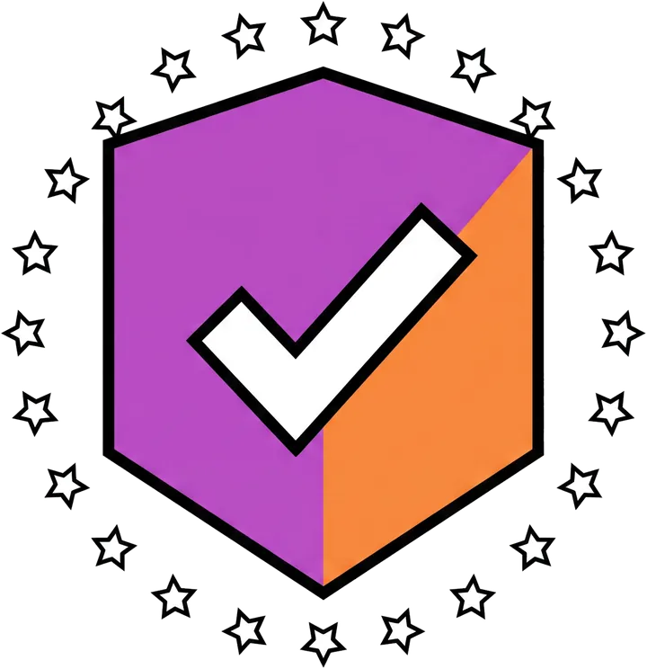

QlickLab est un groupe tech européen qui bâtit des startups à impact. Notre point de départ n'est pas la technologie • c'est une conviction : une société ne vaut que par la place qu'elle donne à ses différences. La philosophie et l'éducation guident nos choix ; l'IA responsable n'est qu'un outil.

On ne construit que ce qui compte. À commencer par Moody.
Moody · le suivi de santé mentale privé
Quatre convictions guident chaque startup que nous lançons. Elles décident de ce que nous construisons • et surtout de ce que nous refusons.
Avant la moindre ligne de code, une question : est-ce que ce produit rend les gens plus libres, plus autonomes, plus dignes ? La philosophie n'est pas un supplément d'âme chez QlickLab • c'est la première étape de conception.
On interroge le sens, l'éthique et les conséquences d'un projet avant même de décider s'il mérite d'exister. Beaucoup d'idées s'arrêtent là. C'est voulu.
« Une technologie sans intention est une technologie dangereuse. »
Rien ne réduit les inégalités aussi durablement que l'accès au savoir. C'est pourquoi l'éducation traverse tout ce que nous faisons : nos outils expliquent, transmettent et rendent autonome • au lieu de créer de la dépendance.
Un produit qui infantilise l'utilisateur a échoué, même s'il « marche ». Quand une de nos startups touche l'école, elle est gratuite là où le besoin est le plus grand.
« Donner un outil, c'est bien. Apprendre à s'en passer, c'est mieux. »
Nous ne faisons pas de l'IA pour faire de l'IA. Nous l'utilisons là où elle libère du temps, élargit l'accès et épaule les personnes • jamais là où elle déciderait à leur place.
Transparente, documentée, hébergée en Europe : chez nous, l'humain garde la main. Toujours. L'algorithme propose, la personne dispose.
« L'IA doit augmenter les gens, pas les remplacer. »
Nous imaginons un continent où l'innovation sert d'abord celles et ceux qu'on laisse habituellement de côté : les malades, les élèves en difficulté, les personnes empêchées, les territoires oubliés.
Une tech qui rapproche au lieu de fracturer, souveraine et humaine. C'est la boussole de chaque startup que nous lançons.
« Le progrès ne compte que s'il n'oublie personne. »
On est un venture builder : on détecte des besoins réels, puis on conçoit et on lance des startups pour y répondre. Voici nos terrains • et des produits déjà entre les mains des gens.

Suivi des maladies chroniques, prévention, aide au diagnostic • sans jamais remplacer le soignant.

Tuteurs IA, lutte contre le décrochage, accès au savoir pour tous • gratuit là où il le faut.

Accessibilité, insertion, lutte contre l'isolement • pensés avec les personnes concernées.

Sobriété énergétique et données environnementales, à l'échelle du territoire.
Conçue par un patient, pour les patients. Moody met en corrélation l'humeur et les facteurs du quotidien • sans jamais envoyer vos données ailleurs.
Le journal de santé mentale qui reste sur votre téléphone.
Freemium • suivi de base gratuit · Passe à vie • achat unique pour l'IA locale, les intégrations Apple/Garmin et l'export médical.

Un check-in humeur en quelques secondes, entièrement sur votre téléphone.
Un modèle de venture builder, transparent, où l'impact prime sur la croissance.
Un besoin social, sanitaire ou éducatif réel, identifié avec le terrain et les personnes concernées.
Prototype confronté à l'usage, experts métier et comité d'éthique. On ne code que si l'impact est là.
Équipe dédiée, IA responsable, RGPD et hébergement européen. Construit avec ses futurs usagers.
La startup gagne son autonomie. L'impact se mesure et se publie, en continu.

Moody est pensé « local-first » : vos données de santé les plus intimes restent sur votre téléphone. Personne d'autre • pas même nous • ne peut les lire.
Uniquement sur votre téléphone. Aucun serveur cloud, aucun compte : vos données ne quittent jamais l'appareil et restent chiffrées de bout en bout.
Non. C'est un outil d'aide au suivi. Il génère un rapport clair à partager en consultation • le soin reste entre vous et votre soignant.
Entièrement embarquée (on-device). L'analyse des symptômes se fait localement, pour un coût cloud de 0 $, sans jamais rien envoyer.
L'humeur, mise en corrélation avec le sommeil, le cycle, les traitements et la nutrition. Tout est modulaire : vous activez seulement ce qui vous concerne.
Freemium : le suivi de base est gratuit. Un « Passe à vie » (achat unique) débloque l'IA locale, les intégrations Apple/Garmin et l'export médical.
Que vous portiez un besoin, un talent ou des moyens : il y a une place pour faire avancer les projets qui comptent.
Vous avez identifié un besoin réel, sur le terrain.
Vous voulez mettre votre métier au service de l'utile.
Vous financez ou accompagnez l'impact.
Vous portez un enjeu social, éducatif, sanitaire ou environnemental ? Parlons-en. On étudie chaque projet sérieux • et on vous dit franchement si l'IA a du sens ici.